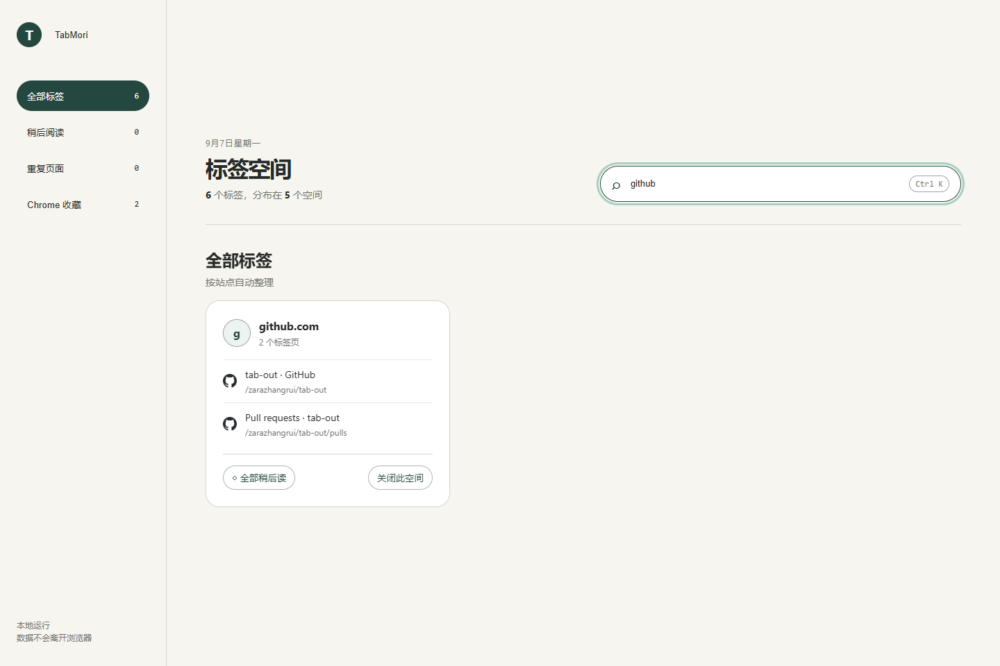
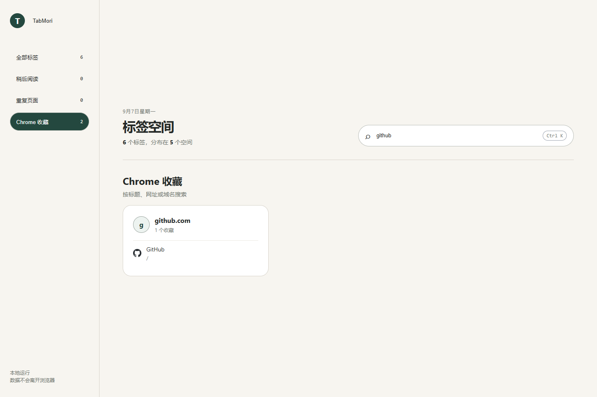
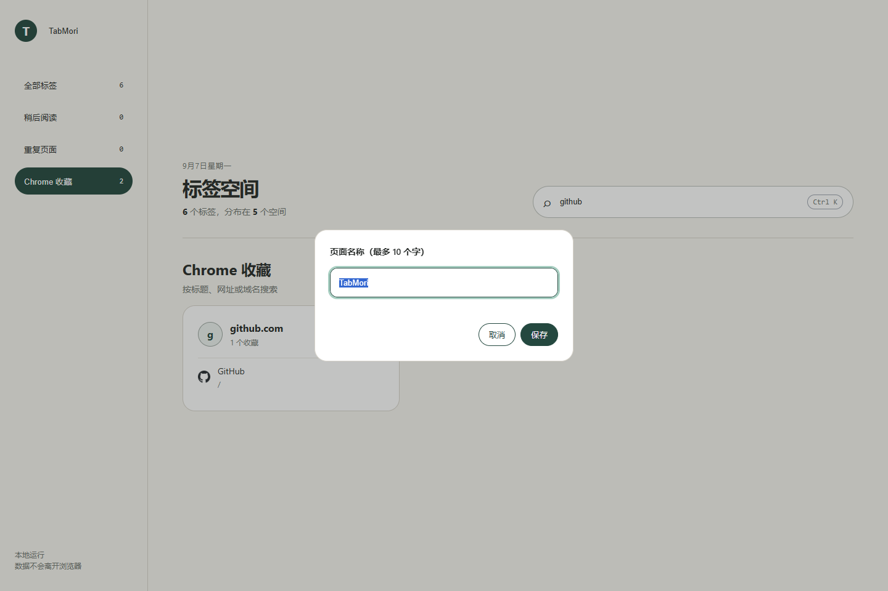
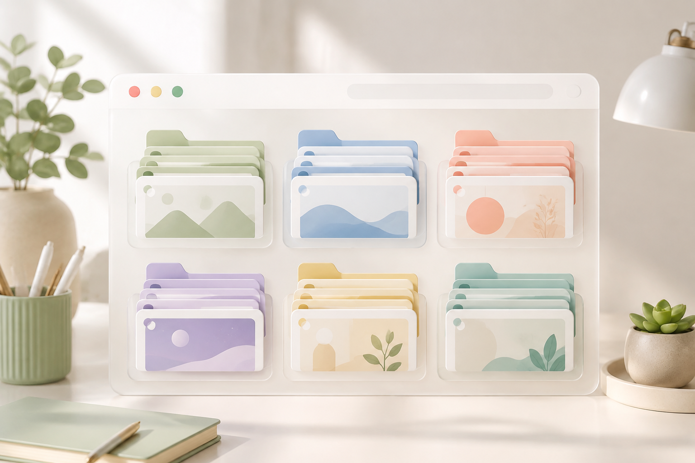
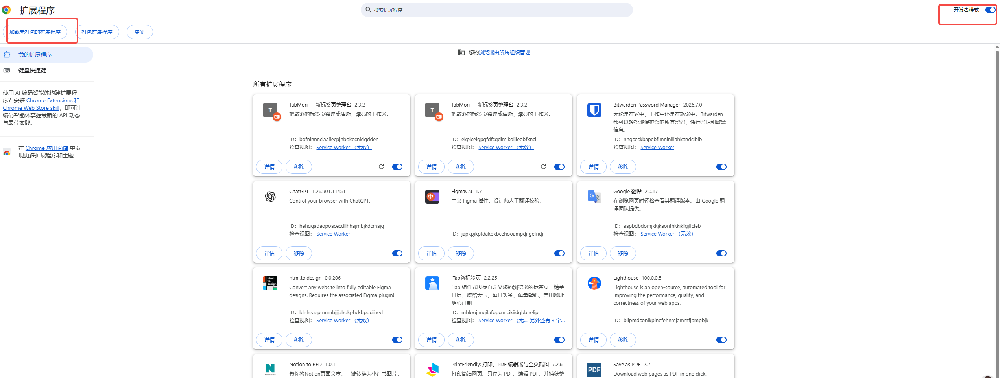
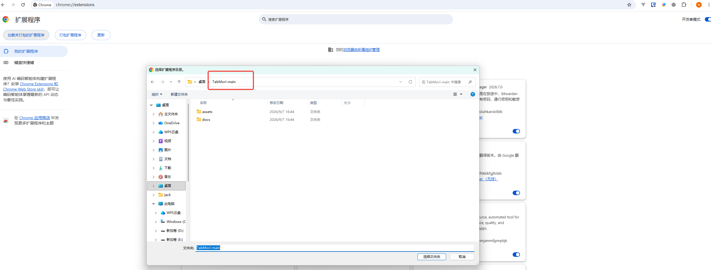

按网站分组
Group open tabs by domain so GitHub, Notion, docs, and articles stop mixing together.
Chrome New Tab Extension
TabMori 把打开的标签页按网站整理好，顺手搜标签、搜收藏、找重复页面。不是再加一个复杂工作台，只是让新标签页更好用一点。
A clean Chrome new tab extension for grouping tabs, searching bookmarks, and reducing duplicate pages.

Tabbed screenshots show the main states: grouped tabs, search, bookmarks, and custom naming.




保留最常用的整理动作，打开新标签页就能开始用。Simple actions for people who already have too many tabs open.
Group open tabs by domain so GitHub, Notion, docs, and articles stop mixing together.
Search open tabs and Chrome bookmarks from one new tab page.
Activate an existing tab instead of opening the same page again.
Spot duplicate URLs and clean up the extras quickly.
Put temporary pages aside without turning bookmarks into a junk drawer.
No backend, no account, no analytics. Data stays in Chrome local storage.
当前通过 ZIP 安装。Chrome 本地扩展需要先开启开发者模式。Install from ZIP with Chrome Developer mode enabled.
Unzip TabMori.zip into a normal folder.
Open chrome://extensions in Google Chrome.
Turn on Developer mode in the top-right corner.
Click Load unpacked and select the unzipped folder.
不要直接选择 ZIP 文件。Chrome 需要加载包含 manifest.json 的解压文件夹。Do not select the ZIP directly.

